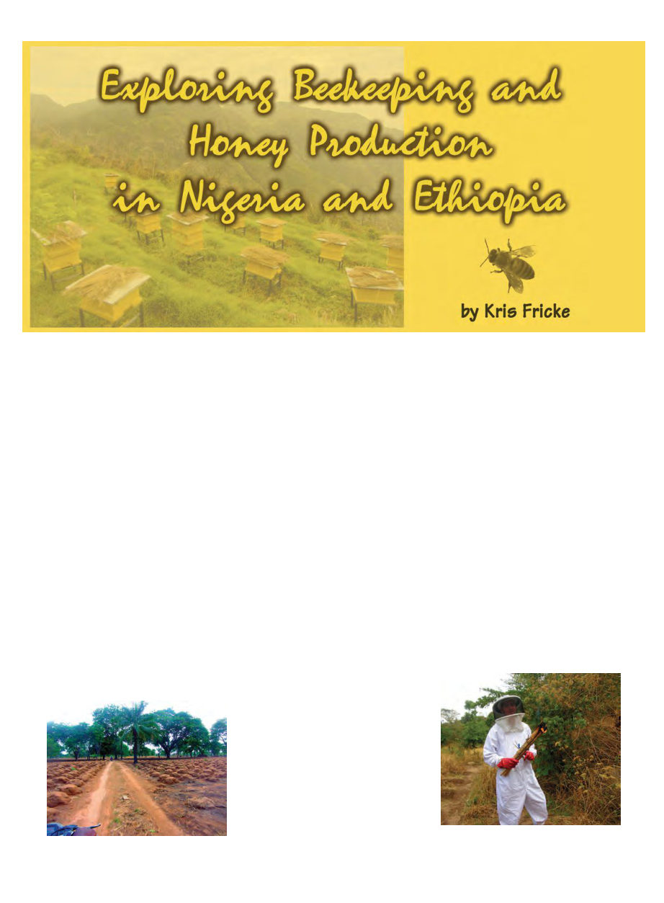

September 2012
881
Nigeria
R
ows of yam mounds and mud-walled
little houses fly past us as we speed
along the narrow dirt trail. Our little
convoy of four motorbikes, each with a
driver and passenger, occasionally slows to
go around the skinny white cows with their
huge horns. Farmers look up from maintain-
ing their red-brown yam mounds and wave
as we go past. Women in brightly-colored
dresses, with loads upon their head bound
for market, stand aside in the dappled shade
as we pass, and give us friendly smiles. If
Nigeria could be boiled down to an abstract
general impression, that would be it – rows
and rows of yam mounds made of red mud,
the verdant green trees, and smiles under as-
tonishing loads carried on heads.
After about twenty minutes the land
around us rises into mountainous hills, and
the yam fields give way to rocks and scrag-
gly trees. Up and up we go, at times having
to get off the motorbikes and walk up par-
ticularly steep or treacherous parts of the
trail. About two hours later we reach our
destination: the remote village of Ogbagi.
First reached by motorbike last October, the
only other vehicles ever to reach the village
were some range rovers in 1956. Despite
this isolation all the village houses (small,
rectangular, mud-walled) have corrugated
metal roofs, which presumably were carried
up the mountain on people’s heads.
The village’s beekeeper/farmers gather
together under a large mango tree. Most
farmers in the village maintain a few tradi-
tional (hollowed-out log) hives high up in
trees, as well as practice “honey hunting.”
Over the next two hours I explain the bene-
fits of removable-comb topbar hives and
how to make them, and answer questions
about bee biology and behavior. Then it’s
time to inspect a hive.
They only ever open hives at night, so the
villagers were amused and curious when I
proposed opening a hive during the day. My
purpose in doing the inspection is more to
show it’s possible than anything else. When
I put my protective coveralls on, I’m pretty
sure one of the young men is laughing at me.
They gather around about thirty feet away
as I approach the little granary hut that has
a beehive in it.
I’d been given a smoking bundle of reeds
as a smoker. Unfortunately, with no way to
blow smoke into the hive with that, when I
open the door of the hut, the bees become
angry before I can adequately smoke them.
The crowd ran.
Despite this, I still think the “Africanized”
bees I’m accustomed to in California are
much much worse than any bees I’ve met in
Africa. Angry AHBs would be bombarding
my veil like someone throwing handfuls of
gravel, and finding miraculous ways to get
into even the newest most complete suit.
These were just your average angry bees.
I inspected the colony as well as one can
without removable frames, but could only
really determine that there was a lot of un-
capped honey. I then closed it up and walked
to a nearby clearing to walk in circles for
awhile to lose the pursuing bees. My driver
came within shouting distance and shouted
at me to light the brush on fire, presumably
to create mass smoke to lose the bees. That
would have made a ridiculous fiasco out of
a normal bee inspection though, quite con-
trary to my goal, and instead I just paced
around for five minutes, removed my suit,
and rejoined the group.
The adventure in Ogbagi Village was part
of the 2nd of 3 projects I’ve done this year
with Winrock International. Winrock does
the support and logistics to send volunteers
through the USAID Farmer-to-Farmer pro-
gram to aid in development throughout the
world. They do dairy and a lot of fish farm-
ing, as well as other things, and of more in-
terest to you and I, they do a lot of
beekeeping development.
Usually we’re talking topbar hives, since
they generally cost about a 10th as much as
a frame hive (notwithstanding the really
high prices they apparently go for in Amer-
ica, in the infamous recent “Newbees Bee-
ware” article) and can be produced by
beekeepers themselves. Apiculture is often
an underappreciated “natural resource” in
developing areas, with much room for ex-
pansion, low input costs (prices vary by re-
Yam fields in Nigeria.
I get ready to smoke the bees the
traditional way in Nigeria!